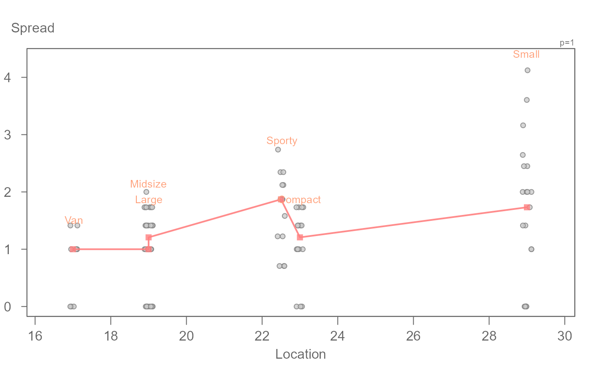
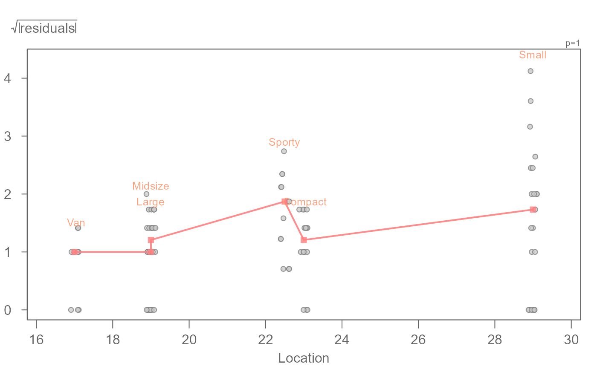

The eda_sl function generates William Cleveland's
spread-location plot for univariate and bivariate data. The function will also
generate Tukeys' spread-level plot.
Usage
eda_sl(
dat,
x = NULL,
fac = NULL,
type = "location",
p = 1,
tukey = FALSE,
sprd = "frth",
jitter = 0.01,
robust = TRUE,
loess.d = list(family = "symmetric", degree = 1, span = 1),
label = TRUE,
label.col = "lightsalmon",
plot = TRUE,
grey = 0.6,
pch = 21,
p.col = "grey50",
p.fill = "grey80",
size = 1,
alpha = 0.8,
labelxbuff = 0.05,
labelybuff = 0.05,
show.par = TRUE
)Arguments
- dat
Dataframe of univariate data or a linear model.
- x
Continuous variable column (ignored if
datis a linear model).- fac
Categorical variable column (ignored if
datis a linear model).- type
s-l plot type.
"location"= spread-location,"level"= spread-level. If the input is a model, a spread-level plot is generated.- p
Power transformation to apply to variable. Ignored if input is a linear model.
- tukey
Boolean determining if a Tukey transformation should be adopted (FALSE adopts a Box-Cox transformation).
- sprd
Choice of spreads used in the spread-versus-level plot. Either interquartile,
sprd = "IQR"or fourth-spread,sprd = "frth"(default).- jitter
Jittering parameter for the spread-location plot. A fraction of the range of location values.
- robust
Boolean indicating if robust regression should be used on the spread-level plot.
- loess.d
Arguments passed to the internal loess function. Applies only to the linear model spread-level plot.
- label
Boolean determining if group labels are to be added to the spread-location plot.
- label.col
Color assigned to group labels (only applicable if
type = location).- plot
Boolean determining if plot should be generated.
- grey
Grey level to apply to plot elements (0 to 1 with 1 = black).
- pch
Point symbol type.
- p.col
Color for point symbol.
- p.fill
Point fill color passed to
bg(Only used forpchranging from 21-25).- size
Point size (0-1).
- alpha
Point transparency (0 = transparent, 1 = opaque). Only applicable if
rgb()is not used to define point colors.- labelxbuff
Buffer to add to the edges of the plot to make room for the labels in a spread-location plot. Value is a fraction of the plot width.
- labelybuff
Buffer to add to the top of the plot to make room for the labels in a spread-location plot. Value is a fraction of the plot width.
- show.par
Boolean determining if the power transformation applied to the data should be displayed.
Details
The function generates a few variations of the spread-location/spread-level
plots depending on the data input type and parameter passed to the
type argument. The residual spreads are mapped to the y-axis and the
levels are mapped to the x-axis. Their values are computed as follows:
type = "location"(univariate data):
William Cleveland's spread-location plot applied to univariate data.
\(\ spread = \sqrt{|residuals|}\)
\(\ location = medians\)type = "level"(univariate data):
Tukey's spread-level plot (aka spread-versus-level plot). This plot is commonly used to help find a power transformation that will help stabilize the spread in the data. This option will output the slope of the fitted line in the console. By default, the fourth spread is used to define the spread. Alternatively, the IQR can be used by settingspread = "IQR". The output will be nearly identical except for small datasets where the two methods may diverge slightly in output.
\(\ spread = log(fourth\ spread(residuals))\)
\(\ location = log(medians)\)type = "location"if input is a model of classlm,eda_lmoreda_rline:
William Cleveland's spread-location plot applied to residuals of a linear model.
\(\ spread = \sqrt{|residuals|}\)
\(\ location = fitted\ values\)
References
Understanding Robust and Exploratory Data Analysis, Hoaglin, David C., Frederick Mosteller, and John W. Tukey, 1983.
William S. Cleveland. Visualizing Data. Hobart Press (1993)
Examples
cars <- MASS::Cars93
# Cleveland's spread-location plot applied to univariate data
eda_sl(cars, MPG.city, Type)

# The function can also generate Tukey's spread-level plot to identify a
# power transformation that can stabilize spread across fitted values
# following power = 1 - slope
eda_sl(cars, MPG.city, Type, type = "level")

#> Slope = 3.013843
# A slope of around 3 is computed from the s-l plot, therefore, a suggested
# power is 1 - 3 = -2. We can apply a power transformation within the
# function via the p argument. By default, a Box-Cox transformation method
# is adopted.
eda_sl(cars, MPG.city, Type, p = -2)
# Spread-location plot can also be generated from residuals of a linear model
M1 <- lm(mpg ~ hp, mtcars)
eda_sl(M1)